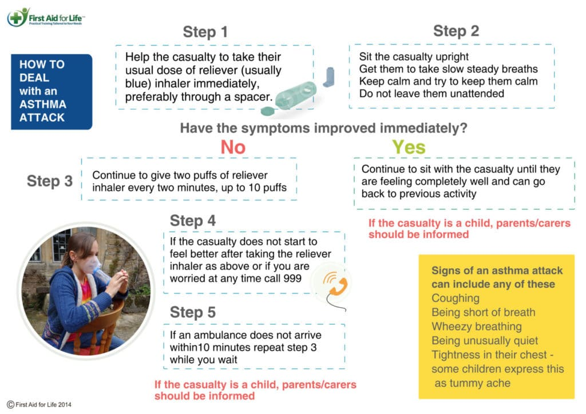

Go back to Home
What are some of the symptoms of asthma?
- coughing
- wheezing
- shortness of breath
- tightness in the chest
- often people find it particularly difficult to breathe out and have an increase in sticky mucus and phlegm
Not everyone will get all of these symptoms.
How to help in an asthma attack?
If someone is having an asthma attack, always follow the instructions outlined on their medication. However, if they do not have them to hand, these are the steps to follow (these guidelines are suitable for both children and adults):

Be calm and reassuring as reducing the stress and keeping the casualty calm really helps them to control their symptoms and panic can increase the severity of an attack. Take one to two puffs of the reliever inhaler (usually blue), immediately – using a spacer device if available.
- Stay as calm as you can and encourage them to stay calm too
- Sit them down, loosen any tight clothing and encourage them to take slow, steady breaths.
- If they do not start to feel better, they should take more puffs of their reliever inhaler
- If they do not start to feel better after taking their inhaler as above, or if you are worried at any time, call 999/112.
- They should keep taking the reliever inhaler whilst waiting for the paramedics to arrive
- If you suspect the asthma attack maybe due to an allergic reaction and the reliever inhaler is not working. In case the person has been prescribed an adrenaline auto-injector in case of an acute allergic reaction – it would be advisable to give this injection into the upper, outer part of their thigh according to the instructions. If worried in any way, check with the emergency services and keep them informed and updated as to the casualty’s condition.
NOTE: Encouraging someone to sit upright is generally helpful when dealing with breathing problems. Sitting the wrong way round on a chair may be a good position for them.
DO NOT take them outside for fresh air if it is cold – as cold air makes symptoms worse.
What to do after an asthma attack?
They should make an appointment with your doctor or asthma nurse for an asthma review, ideally within 48 hours of their attack.